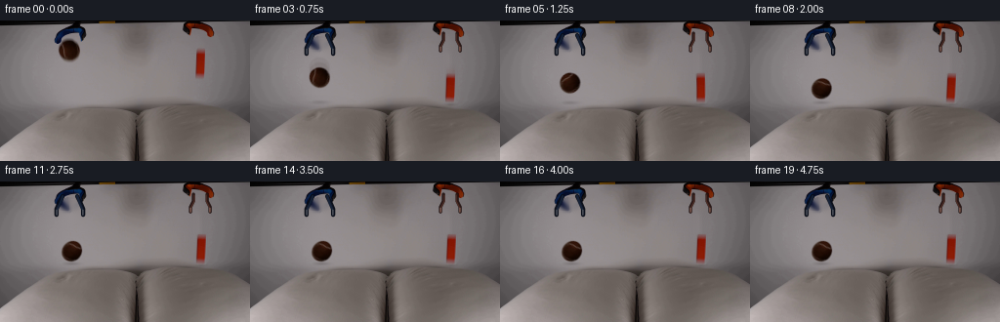
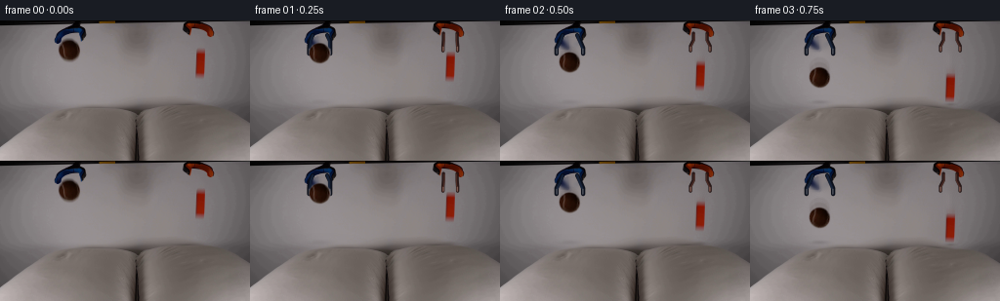

CODING AGENTS AS PIXEL WORLD MODELS
traex/GPT-5.6-Sol · 0002
点击播放 · 原生 RGB 像素
逐轮保存的候选
回放视频、检查图与代码变化。
每份候选均可单独播放。实际图片检查记录在下方工具轨迹中。
候选 01播放与检查图
点击播放 · 原生 RGB 像素


展开代码变化
--- 上一保存版本
+++ 本次保存版本
@@ -0,0 +1,222 @@
+"""Generate the requested locked-off scientific drop demonstration.
+
+Only the supplied first frame is used as visual source material. The two held
+objects are lifted from that image, the newly exposed backdrop is reconstructed
+locally, and their motion/contact response is rendered analytically.
+"""
+from pathlib import Path
+import cv2
+import numpy as np
+from PIL import Image
+import artifact_io
+
+W, H = 256, 144
+FPS, N = 4, 20
+
+
+def smoothstep(a, b, x):
+ x = np.clip((x-a)/(b-a), 0.0, 1.0)
+ return x*x*(3.0-2.0*x)
+
+
+def ellipse_alpha(cx, cy, rx, ry):
+ yy, xx = np.mgrid[:H, :W]
+ q = np.sqrt(((xx-cx)/rx)**2 + ((yy-cy)/ry)**2)
+ return (1.0-smoothstep(0.86, 1.04, q)).astype(np.float32)
+
+
+def rounded_box_alpha(x0, y0, x1, y1, radius=2.0):
+ yy, xx = np.mgrid[:H, :W]
+ cx, cy = (x0+x1)/2, (y0+y1)/2
+ hx, hy = (x1-x0)/2-radius, (y1-y0)/2-radius
+ qx = np.maximum(np.abs(xx-cx)-hx, 0)
+ qy = np.maximum(np.abs(yy-cy)-hy, 0)
+ dist = np.sqrt(qx*qx+qy*qy)-radius
+ return (1.0-smoothstep(-0.7, 0.8, dist)).astype(np.float32)
+
+
+def transform_about(cx, cy, nx, ny, angle=0.0, sx=1.0, sy=1.0):
+ """OpenCV affine matrix mapping source coordinates to destination."""
+ a = np.deg2rad(angle)
+ ca, sa = np.cos(a), np.sin(a)
+ A = np.array([[ca*sx, -sa*sy], [sa*sx, ca*sy]], np.float32)
+ c0 = np.array([cx, cy], np.float32)
+ c1 = np.array([nx, ny], np.float32)
+ t = c1-A@c0
+ return np.c_[A, t].astype(np.float32)
+
+
+def composite_warp(dst, src, alpha, M, opacity=1.0, interpolation=cv2.INTER_CUBIC):
+ rgb = cv2.warpAffine(src, M, (W, H), flags=interpolation,
+ borderMode=cv2.BORDER_REFLECT_101).astype(np.float32)
+ aa = cv2.warpAffine(alpha, M, (W, H), flags=interpolation,
+ borderMode=cv2.BORDER_CONSTANT)
+ aa = np.clip(aa*opacity, 0.0, 1.0)[..., None]
+ return np.clip(dst.astype(np.float32)*(1-aa)+rgb*aa, 0, 255).astype(np.uint8)
+
+
+def overlay_rgba(dst, rgba):
+ a = rgba[..., 3:4].astype(np.float32)/255.0
+ return np.clip(dst.astype(np.float32)*(1-a)+rgba[..., :3].astype(np.float32)*a,
+ 0, 255).astype(np.uint8)
+
+
+def draw_open_grippers(base, amount):
+ """Draw just the exposed lower jaw segments, integrated with original tools."""
+ S = 4
+ lay = np.zeros((H*S, W*S, 4), np.uint8)
+ # Coordinates interpolate from the original closed grip to its open state.
+ # Left: blue-black laboratory grabber around the ball.
+ lx = 63.0-5.2*amount
+ rx = 79.0+6.0*amount
+ col_dark, col_mid, col_hi = (8, 13, 24, 245), (20, 32, 53, 245), (57, 65, 78, 180)
+ def line(points, color, width, line_type=cv2.LINE_AA):
+ p = np.round(np.array(points)*S).astype(np.int32)
+ cv2.polylines(lay, [p], False, color, width*S, line_type)
+ line([(64,15),(61,21),(lx,28),(lx,34)], col_dark, 4)
+ line([(79,15),(82,21),(rx,28),(rx,34)], col_dark, 4)
+ line([(64,15),(62,21),(lx+1,28)], col_mid, 2)
+ line([(79,15),(81,21),(rx-1,28)], col_mid, 2)
+ line([(lx+0.3,29),(lx+0.3,34)], col_hi, 1)
+ line([(rx-0.3,29),(rx-0.3,34)], col_hi, 1)
+ # Right: dark reddish metal jaw around the orange block.
+ lx2 = 200.0-5.0*amount
+ rx2 = 210.0+5.0*amount
+ rdark, rmid, rhi = (38, 20, 18, 240), (73, 39, 31, 235), (126, 72, 55, 155)
+ line([(198,13),(198,20),(lx2,26),(lx2,31)], rdark, 3)
+ line([(212,13),(212,20),(rx2,26),(rx2,31)], rdark, 3)
+ line([(199,14),(199,20),(lx2+1,26)], rmid, 1)
+ line([(211,14),(211,20),(rx2-1,26)], rmid, 1)
+ line([(lx2+.3,27),(lx2+.3,31)], rhi, 1)
+ line([(rx2-.3,27),(rx2-.3,31)], rhi, 1)
+ small = cv2.resize(lay, (W, H), interpolation=cv2.INTER_AREA)
+ return overlay_rgba(base, small)
+
+
+def pillow_warp(img, left_depth, right_depth):
+ """A broad, shallow displacement gives the cushions compliant contact."""
+ yy, xx = np.mgrid[:H, :W].astype(np.float32)
+ # Keep displacement below the pillow's top edge; fade it by the lower frame.
+ vertical = smoothstep(72, 82, yy) * (1.0-smoothstep(122, 144, yy))
+ d = (left_depth*np.exp(-0.5*((xx-72.0)/20.0)**2) +
+ right_depth*np.exp(-0.5*((xx-205.0)/17.0)**2)) * vertical
+ # Sampling upward shifts the visible cushion material downward into a dent.
+ mapx = xx
+ mapy = np.clip(yy-d, 0, H-1).astype(np.float32)
+ return cv2.remap(img, mapx, mapy, cv2.INTER_CUBIC,
+ borderMode=cv2.BORDER_REFLECT_101)
+
+
+def add_soft_shadow(img, cx, surface, gap, kind='ball', strength=1.0):
+ yy, xx = np.mgrid[:H, :W]
+ gap = max(0.0, float(gap))
+ if kind == 'ball':
+ rx = 10.5 + .18*gap
+ ry = 2.1 + .035*gap
+ dark = np.array([48,43,43], np.float32)
+ else:
+ rx = 7.0 + .13*gap
+ ry = 2.0 + .028*gap
+ dark = np.array([52,43,40], np.float32)
+ q = ((xx-cx)/rx)**2 + ((yy-(surface+1.3))/ry)**2
+ blur = np.exp(-1.8*q)
+ opacity = (0.20*np.exp(-gap/38.0)+0.025)*strength
+ a = (blur*opacity)[...,None].astype(np.float32)
+ return np.clip(img.astype(np.float32)*(1-a)+dark*a,0,255).astype(np.uint8)
+
+
+def ball_state(f):
+ # First free-fall is y = y0 + 1/2*g*t^2 (g=100 px/s^2).
+ if f <= 3:
+ t=f/FPS
+ return 71.0, 30.0+50.0*t*t, 8.0*f, 1.0, 1.0
+ states = {
+ 4:(71.0,71.8,42,1.14,.86), # first contact/squash
+ 5:(71.3,63.8,66,.99,1.02), # absorbed low rebound
+ 6:(71.8,65.8,88,1.0,1.0),
+ 7:(72.3,70.7,108,1.08,.92), # second, much softer contact
+ 8:(72.7,69.5,119,1.02,.98),
+ 9:(73.0,71.0,127,1.04,.96),
+ }
+ return states.get(f, (73.0,71.1,127,1.035,.965))
+
+
+def block_state(f):
+ if f <= 2:
+ t=f/FPS
+ return 205.0,44.0+50.0*t*t,0.0,1.0,1.0
+ states = {
+ 3:(205.0,68.7,0.0,1.03,.97),
+ 4:(205.2,69.1,5.0,1.01,.98),
+ 5:(205.5,68.8,-2.5,1.0,1.0),
+ 6:(205.7,69.0,2.1,1.0,.99),
+ 7:(205.8,69.0,0.3,1.0,1.0),
+ 8:(205.8,69.0,1.0,1.0,1.0),
+ }
+ return states.get(f,(205.8,69.0,.8,1.0,1.0))
+
+
+def main():
+ case_dir = Path(__file__).resolve().parent
+ first = np.array(Image.open(case_dir/'first_frame.png').convert('RGB'), dtype=np.uint8)
+ assert first.shape == (H,W,3)
+
+ # Soft matte extraction from the source image.
+ ball_a = ellipse_alpha(71.0,30.2,11.5,11.1)
+ block_a = rounded_box_alpha(199.6,28.3,210.7,59.8,2.1)
+
+ # Reconstruct only the pixels occluded by released objects. Tool bodies and
+ # everything else stay exactly locked to the source photograph.
+ remove = np.zeros((H,W),np.uint8)
+ cv2.ellipse(remove,(71,30),(13,13),0,0,360,255,-1,cv2.LINE_AA)
+ cv2.rectangle(remove,(198,27),(212,61),255,-1)
+ clean = cv2.inpaint(first,remove,4.0,cv2.INPAINT_TELEA)
+
+ # Contact depth per output frame, including damped cushion recovery.
+ ldepth = [0,0,0,0,4.4,1.4,.5,2.6,1.0,1.45]+[1.15]*10
+ rdepth = [0,0,0,3.8,4.5,2.0,2.7,2.15,2.30]+[2.2]*11
+
+ frames = [first.copy()]
+ for f in range(1,N):
+ bx,by,bang,bsx,bsy = ball_state(f)
+ qx,qy,qang,qsx,qsy = block_state(f)
+ frame = pillow_warp(clean,ldepth[f],rdepth[f])
+ frame = draw_open_grippers(frame,min(1.0,f/2.0))
+
+ # Shadows remain attached to the pillow surfaces rather than objects.
+ ball_surface = 82.0+ldepth[f]*.38
+ block_surface = 83.0+rdepth[f]*.35
+ ball_bottom = by+11.0*bsy
+ block_bottom = qy+15.6*abs(np.cos(np.deg2rad(qang)))+5.6*abs(np.sin(np.deg2rad(qang)))
+ frame = add_soft_shadow(frame,bx,ball_surface,ball_surface-ball_bottom,'ball')
+ frame = add_soft_shadow(frame,qx,block_surface,block_surface-block_bottom,'block')
+
+ # A faint exposure smear during the fastest part of free fall.
+ if 2 <= f <= 4:
+ pby = ball_state(f-1)[1]
+ for frac,op in ((.35,.075),(.68,.055)):
+ ty=by*(1-frac)+pby*frac
+ M=transform_about(71.0,30.2,bx,ty,bang*(1-frac),bsx,bsy)
+ frame=composite_warp(frame,first,ball_a,M,op)
+ if 2 <= f <= 3:
+ pqy=block_state(f-1)[1]
+ for frac,op in ((.35,.065),(.68,.045)):
+ ty=qy*(1-frac)+pqy*frac
+ M=transform_about(205.1,44.0,qx,ty,qang*(1-frac),qsx,qsy)
+ frame=composite_warp(frame,first,block_a,M,op)
+
+ # Crisp object exposures over the subtle motion smear.
+ Mb=transform_about(71.0,30.2,bx,by,bang,bsx,bsy)
+ frame=composite_warp(frame,first,ball_a,Mb,1.0)
+ Mq=transform_about(205.1,44.0,qx,qy,qang,qsx,qsy)
+ frame=composite_warp(frame,first,block_a,Mq,1.0)
+ frames.append(frame)
+
+ frames=np.stack(frames).astype(np.uint8)
+ assert frames.shape==(N,H,W,3)
+ assert np.array_equal(frames[0],first)
+ artifact_io.save(frames,case_dir)
+
+
+if __name__=='__main__':
+ main()
可观测工具轨迹
实际执行的命令与返回图片。
命令 1exit 0
/bin/bash -lc "cat GENERATION_RULES.md && printf '\\n--- PROMPT ---\\n' && cat prompt.txt"
命令 2exit 0
/bin/bash -lc "find . -maxdepth 2 -type f -printf '%p\\n' | sort && printf '\\n--- image metadata ---\\n' && python3 - <<'PY'
from PIL import Image
im=Image.open('first_frame.png')
print(im.mode, im.size)
print(im.getextrema())
PY"命令 3exit 0
/bin/bash -lc "which ffmpeg || true; python3 - <<'PY' mods=['cv2','numpy','PIL','imageio','scipy','skimage'] for m in mods: try: x=__import__(m); print(m,'OK',getattr(x,'__version__','')) except Exception as e: print(m,'NO',e) PY"
命令 4exit 0
/bin/bash -lc "python3 - <<'PY'
import cv2, numpy as np
from PIL import Image
im=np.array(Image.open('first_frame.png'))
h,w,_=im.shape
# kmeans LAB colors
lab=cv2.cvtColor(im,cv2.COLOR_RGB2LAB).reshape(-1,3).astype(np.float32)
K=16
crit=(cv2.TERM_CRITERIA_EPS+cv2.TERM_CRITERIA_MAX_ITER,100,.1)
_,labels,cent=cv2.kmeans(lab,K,None,crit,10,cv2.KMEANS_PP_CENTERS)
cent_rgb=cv2.cvtColor(np.uint8(cent.reshape(1,K,3)),cv2.COLOR_LAB2RGB)[0]
labels=labels.reshape(h,w)
info=[]
for k in range(K):
ys,xs=np.where(labels==k); n=len(xs)
info.append((n,k,tuple(cent_rgb[k]),(int(xs.min()),int(ys.min()),int(xs.max()),int(ys.max())),(xs.mean(),ys.mean())))
info.sort(reverse=True)
print('clusters count k rgb bbox meanxy')
for row in info: print(row)
# char mapping by cluster count rank, downsample nearest/majority in 4x4
chars=' .,:;irsXA253hMHGS#9B&@'
rank={k:i for i,(_,k,*_) in enumerate(info)}
for by in range(0,h,4):
s=''
for bx in range(0,w,4):
vals=labels[by:min(by+4,h),bx:min(bx+4,w)].ravel(); k=np.bincount(vals,minlength=K).argmax(); s+=chars[rank[k]]
print(s)
PY"命令 5exit 0
/bin/bash -lc "python3 - <<'PY'
from PIL import Image
import numpy as np, cv2
im=np.array(Image.open('first_frame.png'))
# regions saturated: print connected comps by broad HSV saturation
hsv=cv2.cvtColor(im,cv2.COLOR_RGB2HSV)
for name,mask in [
('sat>70',(hsv[:,:,1]>70).astype('uint8')),
('orange',( (im[:,:,0]>im[:,:,1]*1.5)&(im[:,:,0]>im[:,:,2]*1.4)&(im[:,:,0]>50)).astype('uint8')),
('blue',((im[:,:,2]>im[:,:,0]*1.4)&(im[:,:,2]>im[:,:,1]*1.2)&(im[:,:,2]>25)).astype('uint8')),
('dark',(im.mean(2)<45).astype('uint8'))]:
print('\\n',name,'pixels',mask.sum())
n,L,st,ce=cv2.connectedComponentsWithStats(mask,8)
rows=[]
for i in range(1,n):
x,y,w,h,area=st[i];
if area>=3: rows.append((area,(x,y,w,h),tuple(np.round(ce[i],1))))
for r in sorted(rows,reverse=True)[:30]: print(r)
PY"命令 6exit 0
/bin/bash -lc "python3 - <<'PY'
from PIL import Image
import numpy as np
im=np.array(Image.open('first_frame.png'))
# print per x/y saturation and darkness aggregates
mx=im.max(2); mn=im.min(2); sat=mx-mn
for axis in [0,1]:
a=(sat>35).sum(axis=axis); d=(im.mean(2)<50).sum(axis=axis)
print('\\naxis',axis,'index: sat,dark')
for i,(x,y) in enumerate(zip(a,d)):
if x or y: print(i,int(x),int(y))
PY"命令 7exit 0
/bin/bash -lc "sed -n '1,240p' artifact_io.py"
命令 8exit 0
/bin/bash -lc "python3 - <<'PY'
import cv2, numpy as np
im=cv2.imread('first_frame.png')[:,:,::-1]
g=cv2.cvtColor(im,cv2.COLOR_RGB2GRAY)
# Grid mean intensity / gradient 8px blocks
for metric,name in [(g,'gray'),(cv2.magnitude(cv2.Sobel(g,cv2.CV_32F,1,0),cv2.Sobel(g,cv2.CV_32F,0,1)),'grad')]:
print('\\n',name)
if name=='gray': chars=' .:-=+*#%@'; lo,hi=0,180
else: chars=' .:-=+*#%@'; lo,hi=0,150
for y in range(0,144,4):
s=''
for x in range(0,256,4):
v=np.mean(metric[y:y+4,x:x+4]); q=int(np.clip((v-lo)/(hi-lo)*len(chars),0,len(chars)-1)); s+=chars[q]
print(s)
# list large contours by canny
ed=cv2.Canny(g,30,80)
n,L,st,ce=cv2.connectedComponentsWithStats((cv2.dilate(ed,np.ones((3,3),np.uint8),iterations=1)>0).astype('uint8'),8)
print('\\ncomponents')
for i in np.argsort(st[1:,4])[::-1][:20]+1: print(tuple(st[i]),tuple(np.round(ce[i],1)))
PY"命令 9exit 0
/bin/bash -lc "python3 - <<'PY'
from PIL import Image
import numpy as np
im=np.array(Image.open('first_frame.png'))
# point sample every 16 x, every 8 y, each luminance and RGB at salient
for y in range(0,145,8):
if y>=144: break
print(f'y={y:3}', ' '.join(f'{im[y,x].mean():3.0f}' for x in range(0,256,16)))
pts=[(x,y) for y in [0,1,2,4,8,12,16,20,24,28,32,36,40,48,56,64,72,80,88,96,104,112,120,128,136,143] for x in [0,16,32,48,56,64,70,80,96,112,128,144,160,176,192,204,216,232,248,255]]
for x,y in pts:
if max(im[y,x])-min(im[y,x])>20 or im[y,x].mean()<55:
print((x,y),tuple(im[y,x]))
PY"命令 10exit 0
/bin/bash -lc "python3 - <<'PY'
from PIL import Image
import numpy as np, cv2
im=np.array(Image.open('first_frame.png'))
hsv=cv2.cvtColor(im,cv2.COLOR_RGB2HSV)
def char(y,x):
r,g,b=map(int,im[y,x]); hh,s,v=map(int,hsv[y,x])
if v<18:return 'K'
if v<40:return 'k'
if s<15:
return '@' if v>160 else '#' if v>140 else '+' if v>120 else '=' if v>100 else '-' if v>80 else '.'
if s<50:return 'W' if v>150 else 'w' if v>125 else 'g' if v>100 else 'd'
if r>g*1.5 and r>b*1.5:return 'O' if v>100 else 'o' if v>60 else 'r'
if b>r*1.3:return 'B' if v>75 else 'b'
return 'C'
for x0,x1,y0,y1 in [(48,92,0,48),(184,225,0,66),(0,256,76,120)]:
print('\\nREG',x0,x1,y0,y1)
print(' '+''.join(str(x//10%10) for x in range(x0,x1)))
print(' '+''.join(str(x%10) for x in range(x0,x1)))
for y in range(y0,y1): print(f'{y:02d} '+''.join(char(y,x) for x in range(x0,x1)))
PY"命令 11exit 0
/bin/bash -lc "python3 - <<'PY'
from PIL import Image
import numpy as np
im=np.array(Image.open('first_frame.png'))
for cx,cy,r,name in [(71,31,10,'ball'),(205,44,5,'block')]:
y,x=np.ogrid[:144,:256];m=(x-cx)**2+(y-cy)**2<=r*r
a=im[m]
print(name, np.percentile(a,[0,10,25,50,75,90,100],axis=0).astype(int),a.mean(0))
# x,y grid exact around ball every 2 px rgb
for y in range(19,43,3):
print(y,[tuple(im[y,x]) for x in range(59,85,3)])
PY"命令 12exit 0
/bin/bash -lc "python3 - <<'PY'
from PIL import Image
import numpy as np
im=np.array(Image.open('first_frame.png'))
# each pixel char max color
for y in range(24,64):
s=''
for x in range(194,216):
r,g,b=map(int,im[y,x]); sat=max(r,g,b)-min(r,g,b)
if r>80 and r>g*1.5 and r>b*1.5:c='O'
elif sat>30:c='c'
elif np.mean((r,g,b))<70:c='.'
elif np.mean((r,g,b))<100:c='-'
elif np.mean((r,g,b))<125:c='+'
elif np.mean((r,g,b))<145:c='#'
else:c='@'
s+=c
print(f'{y:02d}',s, ['%02x%02x%02x'%tuple(im[y,x]) for x in range(198,213)])
PY"命令 13exit 0
/bin/bash -lc "cat > generate.py <<'PY'
\"\"\"Generate the requested locked-off scientific drop demonstration.
Only the supplied first frame is used as visual source material. The two held
objects are lifted from that image, the newly exposed backdrop is reconstructed
locally, and their motion/contact response is rendered analytically.
\"\"\"
from pathlib import Path
import cv2
import numpy as np
from PIL import Image
import artifact_io
W, H = 256, 144
FPS, N = 4, 20
def smoothstep(a, b, x):
x = np.clip((x-a)/(b-a), 0.0, 1.0)
return x*x*(3.0-2.0*x)
def ellipse_alpha(cx, cy, rx, ry):
yy, xx = np.mgrid[:H, :W]
q = np.sqrt(((xx-cx)/rx)**2 + ((yy-cy)/ry)**2)
return (1.0-smoothstep(0.86, 1.04, q)).astype(np.float32)
def rounded_box_alpha(x0, y0, x1, y1, radius=2.0):
yy, xx = np.mgrid[:H, :W]
cx, cy = (x0+x1)/2, (y0+y1)/2
hx, hy = (x1-x0)/2-radius, (y1-y0)/2-radius
qx = np.maximum(np.abs(xx-cx)-hx, 0)
qy = np.maximum(np.abs(yy-cy)-hy, 0)
dist = np.sqrt(qx*qx+qy*qy)-radius
return (1.0-smoothstep(-0.7, 0.8, dist)).astype(np.float32)
def transform_about(cx, cy, nx, ny, angle=0.0, sx=1.0, sy=1.0):
\"\"\"OpenCV affine matrix mapping source coordinates to destination.\"\"\"
a = np.deg2rad(angle)
ca, sa = np.cos(a), np.sin(a)
A = np.array([[ca*sx, -sa*sy], [sa*sx, ca*sy]], np.float32)
c0 = np.array([cx, cy], np.float32)
c1 = np.array([nx, ny], np.float32)
t = c1-A@c0
return np.c_[A, t].astype(np.float32)
def composite_warp(dst, src, alpha, M, opacity=1.0, interpolation=cv2.INTER_CUBIC):
rgb = cv2.warpAffine(src, M, (W, H), flags=interpolation,
borderMode=cv2.BORDER_REFLECT_101).astype(np.float32)
aa = cv2.warpAffine(alpha, M, (W, H), flags=interpolation,
borderMode=cv2.BORDER_CONSTANT)
aa = np.clip(aa*opacity, 0.0, 1.0)[..., None]
return np.clip(dst.astype(np.float32)*(1-aa)+rgb*aa, 0, 255).astype(np.uint8)
def overlay_rgba(dst, rgba):
a = rgba[..., 3:4].astype(np.float32)/255.0
return np.clip(dst.astype(np.float32)*(1-a)+rgba[..., :3].astype(np.float32)*a,
0, 255).astype(np.uint8)
def draw_open_grippers(base, amount):
\"\"\"Draw just the exposed lower jaw segments, integrated with original tools.\"\"\"
S = 4
lay = np.zeros((H*S, W*S, 4), np.uint8)
# Coordinates interpolate from the original closed grip to its open state.
# Left: blue-black laboratory grabber around the ball.
lx = 63.0-5.2*amount
rx = 79.0+6.0*amount
col_dark, col_mid, col_hi = (8, 13, 24, 245), (20, 32, 53, 245), (57, 65, 78, 180)
def line(points, color, width, line_type=cv2.LINE_AA):
p = np.round(np.array(points)*S).astype(np.int32)
cv2.polylines(lay, [p], False, color, width*S, line_type)
line([(64,15),(61,21),(lx,28),(lx,34)], col_dark, 4)
line([(79,15),(82,21),(rx,28),(rx,34)], col_dark, 4)
line([(64,15),(62,21),(lx+1,28)], col_mid, 2)
line([(79,15),(81,21),(rx-1,28)], col_mid, 2)
line([(lx+0.3,29),(lx+0.3,34)], col_hi, 1)
line([(rx-0.3,29),(rx-0.3,34)], col_hi, 1)
# Right: dark reddish metal jaw around the orange block.
lx2 = 200.0-5.0*amount
rx2 = 210.0+5.0*amount
rdark, rmid, rhi = (38, 20, 18, 240), (73, 39, 31, 235), (126, 72, 55, 155)
line([(198,13),(198,20),(lx2,26),(lx2,31)], rdark, 3)
line([(212,13),(212,20),(rx2,26),(rx2,31)], rdark, 3)
line([(199,14),(199,20),(lx2+1,26)], rmid, 1)
line([(211,14),(211,20),(rx2-1,26)], rmid, 1)
line([(lx2+.3,27),(lx2+.3,31)], rhi, 1)
line([(rx2-.3,27),(rx2-.3,31)], rhi, 1)
small = cv2.resize(lay, (W, H), interpolation=cv2.INTER_AREA)
return overlay_rgba(base, small)
def pillow_warp(img, left_depth, right_depth):
\"\"\"A broad, shallow displacement gives the cushions compliant contact.\"\"\"
yy, xx = np.mgrid[:H, :W].astype(np.float32)
# Keep displacement below the pillow's top edge; fade it by the lower frame.
vertical = smoothstep(72, 82, yy) * (1.0-smoothstep(122, 144, yy))
d = (left_depth*np.exp(-0.5*((xx-72.0)/20.0)**2) +
right_depth*np.exp(-0.5*((xx-205.0)/17.0)**2)) * vertical
# Sampling upward shifts the visible cushion material downward into a dent.
mapx = xx
mapy = np.clip(yy-d, 0, H-1).astype(np.float32)
return cv2.remap(img, mapx, mapy, cv2.INTER_CUBIC,
borderMode=cv2.BORDER_REFLECT_101)
def add_soft_shadow(img, cx, surface, gap, kind='ball', strength=1.0):
yy, xx = np.mgrid[:H, :W]
gap = max(0.0, float(gap))
if kind == 'ball':
rx = 10.5 + .18*gap
ry = 2.1 + .035*gap
dark = np.array([48,43,43], np.float32)
else:
rx = 7.0 + .13*gap
ry = 2.0 + .028*gap
dark = np.array([52,43,40], np.float32)
q = ((xx-cx)/rx)**2 + ((yy-(surface+1.3))/ry)**2
blur = np.exp(-1.8*q)
opacity = (0.20*np.exp(-gap/38.0)+0.025)*strength
a = (blur*opacity)[...,None].astype(np.float32)
return np.clip(img.astype(np.float32)*(1-a)+dark*a,0,255).astype(np.uint8)
def ball_state(f):
# First free-fall is y = y0 + 1/2*g*t"'^2 (g=100 px/s''^2).
if f <= 3:
t=f/FPS
return 71.0, 30.0+50.0*t*t, 8.0*f, 1.0, 1.0
states = {
4:(71.0,71.8,42,1.14,.86), # first contact/squash
5:(71.3,63.8,66,.99,1.02), # absorbed low rebound
6:(71.8,65.8,88,1.0,1.0),
7:(72.3,70.7,108,1.08,.92), # second, much softer contact
8:(72.7,69.5,119,1.02,.98),
9:(73.0,71.0,127,1.04,.96),
}
return states.get(f, (73.0,71.1,127,1.035,.965))
def block_state(f):
if f <= 2:
t=f/FPS
return 205.0,44.0+50.0*t*t,0.0,1.0,1.0
states = {
3:(205.0,68.7,0.0,1.03,.97),
4:(205.2,69.1,5.0,1.01,.98),
5:(205.5,68.8,-2.5,1.0,1.0),
6:(205.7,69.0,2.1,1.0,.99),
7:(205.8,69.0,0.3,1.0,1.0),
8:(205.8,69.0,1.0,1.0,1.0),
}
return states.get(f,(205.8,69.0,.8,1.0,1.0))
def main():
case_dir = Path(__file__).resolve().parent
first = np.array(Image.open(case_dir/'"'first_frame.png').convert('RGB'), dtype=np.uint8)
assert first.shape == (H,W,3)
# Soft matte extraction from the source image.
ball_a = ellipse_alpha(71.0,30.2,11.5,11.1)
block_a = rounded_box_alpha(199.6,28.3,210.7,59.8,2.1)
# Reconstruct only the pixels occluded by released objects. Tool bodies and
# everything else stay exactly locked to the source photograph.
remove = np.zeros((H,W),np.uint8)
cv2.ellipse(remove,(71,30),(13,13),0,0,360,255,-1,cv2.LINE_AA)
cv2.rectangle(remove,(198,27),(212,61),255,-1)
clean = cv2.inpaint(first,remove,4.0,cv2.INPAINT_TELEA)
# Contact depth per output frame, including damped cushion recovery.
ldepth = [0,0,0,0,4.4,1.4,.5,2.6,1.0,1.45]+[1.15]*10
rdepth = [0,0,0,3.8,4.5,2.0,2.7,2.15,2.30]+[2.2]*11
frames = [first.copy()]
for f in range(1,N):
bx,by,bang,bsx,bsy = ball_state(f)
qx,qy,qang,qsx,qsy = block_state(f)
frame = pillow_warp(clean,ldepth[f],rdepth[f])
frame = draw_open_grippers(frame,min(1.0,f/2.0))
# Shadows remain attached to the pillow surfaces rather than objects.
ball_surface = 82.0+ldepth[f]*.38
block_surface = 83.0+rdepth[f]*.35
ball_bottom = by+11.0*bsy
block_bottom = qy+15.6*abs(np.cos(np.deg2rad(qang)))+5.6*abs(np.sin(np.deg2rad(qang)))
frame = add_soft_shadow(frame,bx,ball_surface,ball_surface-ball_bottom,'ball')
frame = add_soft_shadow(frame,qx,block_surface,block_surface-block_bottom,'block')
# A faint exposure smear during the fastest part of free fall.
if 2 <= f <= 4:
pby = ball_state(f-1)[1]
for frac,op in ((.35,.075),(.68,.055)):
ty=by*(1-frac)+pby*frac
M=transform_about(71.0,30.2,bx,ty,bang*(1-frac),bsx,bsy)
frame=composite_warp(frame,first,ball_a,M,op)
if 2 <= f <= 3:
pqy=block_state(f-1)[1]
for frac,op in ((.35,.065),(.68,.045)):
ty=qy*(1-frac)+pqy*frac
M=transform_about(205.1,44.0,qx,ty,qang*(1-frac),qsx,qsy)
frame=composite_warp(frame,first,block_a,M,op)
# Crisp object exposures over the subtle motion smear.
Mb=transform_about(71.0,30.2,bx,by,bang,bsx,bsy)
frame=composite_warp(frame,first,ball_a,Mb,1.0)
Mq=transform_about(205.1,44.0,qx,qy,qang,qsx,qsy)
frame=composite_warp(frame,first,block_a,Mq,1.0)
frames.append(frame)
frames=np.stack(frames).astype(np.uint8)
assert frames.shape==(N,H,W,3)
assert np.array_equal(frames[0],first)
artifact_io.save(frames,case_dir)
if __name__=='__main__':
main()
PY
python3 generate.py
python3 - <<'PY'
from pathlib import Path
from PIL import Image
import numpy as np, hashlib
f=np.stack([np.array(Image.open(f'frames/{i:02d}.png')) for i in range(20)])
a=np.array(Image.open('first_frame.png'))
print('frames',f.shape,f.dtype,'range',f.min(),f.max())
print('frame00 exact',np.array_equal(f[0],a),hashlib.sha256(f[0].tobytes()).hexdigest()[:16])
print('changed pixels from source:',[(i,int(np.any(f[i]"'!=a,2).sum()),round(float(np.abs(f[i].astype(int)-a).mean()),2)) for i in range(20)])
print('"'outputs:',[(p.name,p.stat().st_size) for p in map(Path,['pixels.npz','inspection.png','transition_check.png','index.html'])])
PY"命令 14exit 0
/bin/bash -lc "python3 - <<'PY'
import numpy as np
from PIL import Image
import cv2
F=np.stack([np.array(Image.open(f'frames/{i:02d}.png')) for i in range(20)])
print('frame | ball brown centroid/count | block orange centroid/count')
for i,a in enumerate(F):
r,g,b=[a[...,j].astype(int) for j in range(3)]
# constrain to expected lanes, saturation color tests
mb=(np.indices((144,256))[1]>=50)&(np.indices((144,256))[1]<95)&(r>18)&(r>g*1.35)&(g>b*1.25)&((r-g)>8)
mo=(np.indices((144,256))[1]>=185)&(np.indices((144,256))[1]<225)&(r>95)&(r>g*2.4)&(r>b*2.7)
def stat(m):
y,x=np.where(m)
return ('--' if len(x)==0 else f'({x.mean():5.1f},{y.mean():5.1f})/{len(x):3d}')
print(f'{i:02d} {stat(mb):>18} {stat(mo):>18}')
# temporal max/means
D=np.abs(np.diff(F.astype(np.int16),axis=0))
print('mean adjacent RGB difference:',np.round(D.mean((1,2,3)),3).tolist())
print('max adjacent RGB difference:',D.max((1,2,3)).tolist())
# confirm packed npz semantic matches frames
z=np.load('pixels.npz')['pixels']
p=((F[...,0].astype(np.uint32)<<16)|(F[...,1].astype(np.uint32)<<8)|F[...,2]).transpose(1,2,0)
print('npz',z.shape,z.dtype,'exact packed match',np.array_equal(z,p))
PY"命令 15exit 0
/bin/bash -lc 'python3 -m py_compile generate.py artifact_io.py && cp pixels.npz .tmp/pixels_before.npz && python3 generate.py && cmp -s pixels.npz .tmp/pixels_before.npz; echo deterministic_exit=$?; grep -o '"'\"width\":256,\"height\":144,\"frames\":20,\"fps\":4' index.html | head -1"
保存候选 1 份；完成命令 15 次；可验证图片返回 0 张。原始 API 响应与完整日志保留在本地。